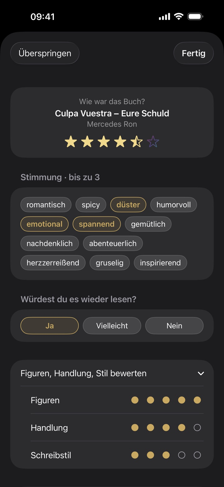
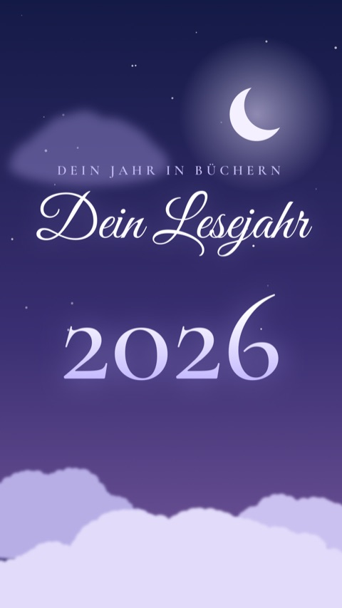
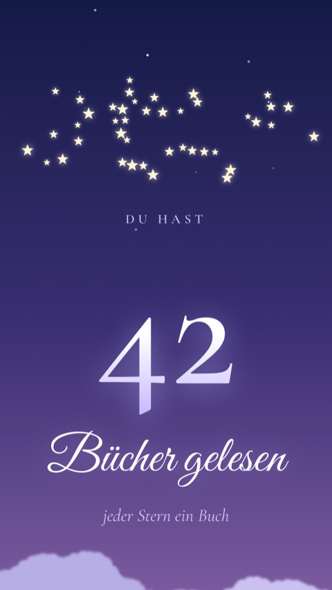
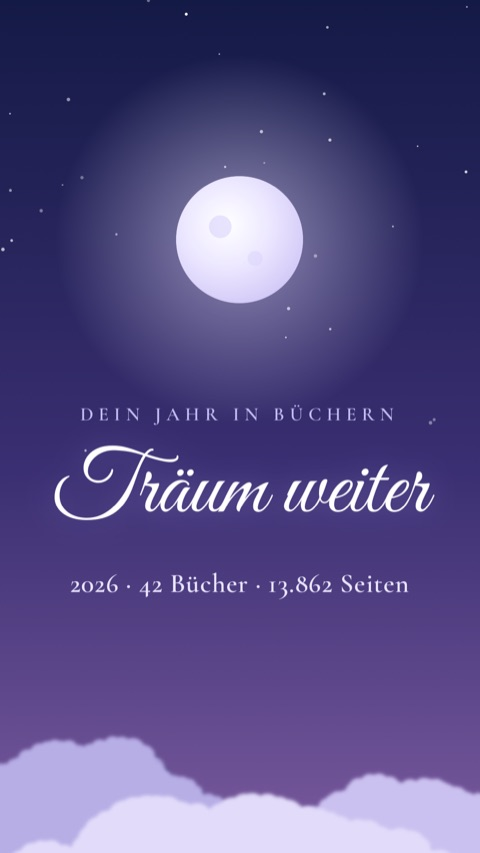
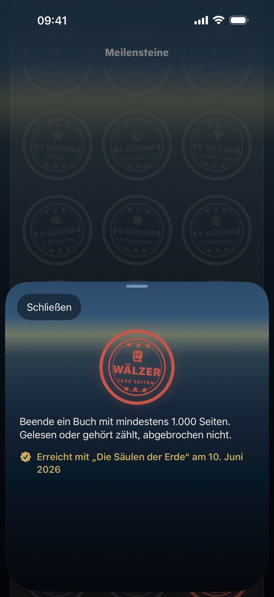

Worum es in diesem Update geht
BookSafe 1.11 fragt, wie ein Buch wirklich war: Du hältst deinen Eindruck fest, findest Bücher nach Stimmung wieder und teilst dein Lesejahr im neuen Design „Verträumt“. Dazu kommen die SuB-Leiche im Film und fünf Challenge-Stempel, die dir erklären, wie du sie bekommst.
Diese Seite beschreibt die Änderungen ausführlicher, als es in die Versionshinweise im App Store passt.
Version 1.11 · veröffentlicht am 7. November 2026
Neu
1Mein Eindruck
Sterne sagen nicht alles. Wenn du ein Buch beendest, hältst du jetzt fest, wie es war: bis zu drei Stimmungen, von spannend über gemütlich bis herzzerreißend, Punkte für Figuren, Handlung und Schreibstil, ob du es wieder lesen würdest, und eine Notiz. Dein Eindruck steht im Buchdetail, und die Bibliothek filtert nach Stimmung und „Wieder lesen“. Wenn du das Blatt nach dem Beenden nicht sehen möchtest, stellst du es in den Einstellungen ab.

2Das Design „Verträumt“
Eine Mondnacht als fünfter Film im Jahresrückblick: Deine Bücher ruhen auf Wolken, Zahlen werden zu Sternen, und aus der Mondsichel wird ein Vollmond. Dasselbe Design gibt es als sechstes Leseupdate-Design.



3Deine SuB-Leiche
Der Film im Jahresrückblick zeigt jetzt das Buch, das am längsten ungelesen bei dir liegt. Im Buchdetail siehst du außerdem, seit wie vielen Tagen ein Buch auf dem SuB liegt. Es zählt der Tag, an dem du es in BookSafe aufgenommen hast.
4Den Film als Bilder teilen
Neben dem Video kannst du deinen Film jetzt auch als einzelne Bilder teilen, bis zu zehn Seiten auf einmal.
5Fünf Challenge-Stempel
Neu im Stempelbuch: Wälzer für ein Buch mit mindestens 1000 Seiten, Sprint für ein Buch in unter drei Stunden, gemessen mit dem Lese-Timer, SuB-Retter für ein Buch, das mindestens ein Jahr ungelesen lag, 100 Seiten an einem Tag und Lesemonat für vier beendete Bücher im selben Kalendermonat. Tippe auf einen Stempel, und du siehst, wie du ihn bekommst und wie weit du bist. Das gilt für alle Stempel im Stempelbuch.

Verbessert
- Deine Bewertungen rücken nach vorn: Die Kacheln zeigen die Sterne unter dem Cover, und der neue Filter findet Bücher ab 4 oder 5 Sternen oder nur die exzellenten
- E-Books: Am Ende einer Lesesitzung trägst du deinen Stand direkt in Prozent ein
- Hörbücher stehen jetzt auf „Am Hören“ statt „Am Lesen“
- Der CSV-Export nimmt jetzt auch Eindruck, eigene Listen, Standort und Leihe mit, und BookSafe erkennt seinen eigenen Export beim Import wieder
Dazu viele weitere Detailverbesserungen.
Ältere Versionen
Was BookSafe seit Version 0.4 dazugelernt hat — vom Ausleih-Tracker über iCloud-Sync und die Apple Watch bis zu den Filmen im Jahresrückblick —, steht gesammelt im Archiv. Zusammen zeigen die Versionen, was die App heute alles kann.
Zum Archiv der älteren Versionen →Gut zu wissen
| Voraussetzung | iPhone und iPad ab iOS 18, Apple Watch ab watchOS 11 |
|---|---|
| Deine Daten | Kein Konto, kein Tracking. Deine Bibliothek liegt auf deinem Gerät und gleicht sich über deine private iCloud ab. |
| Preis | Kostenlos bis 50 Bücher. BookSafe Pro hebt das Limit dauerhaft auf: einmalig 3,99 €, kein Abo. |
| Update | Kommt über den App Store — auf dem iPhone unter „App Store → Profil → Apps aktualisieren“. |